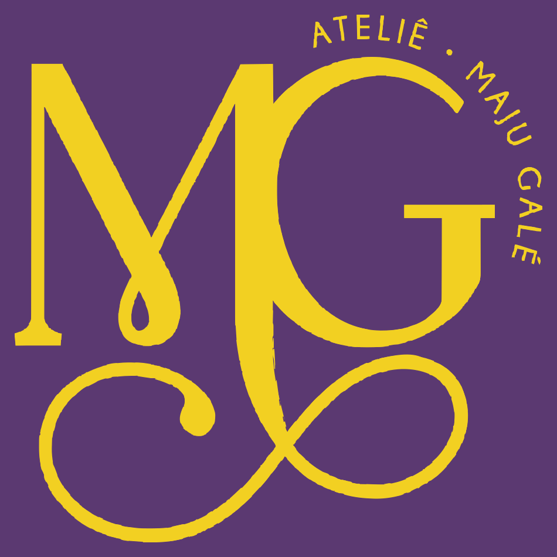
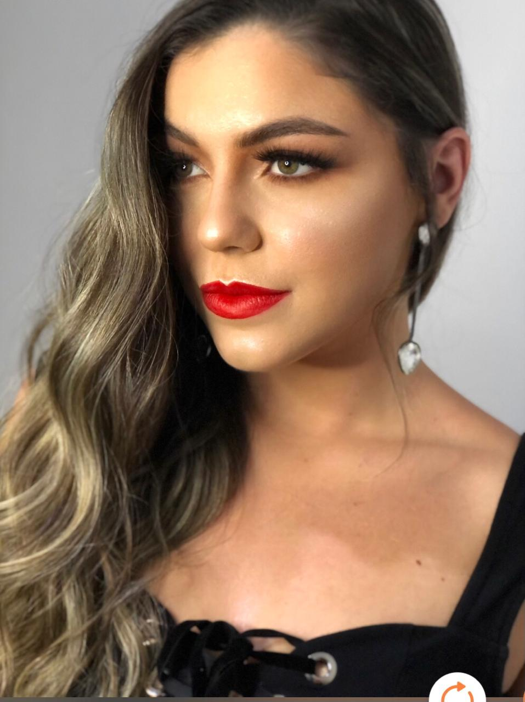
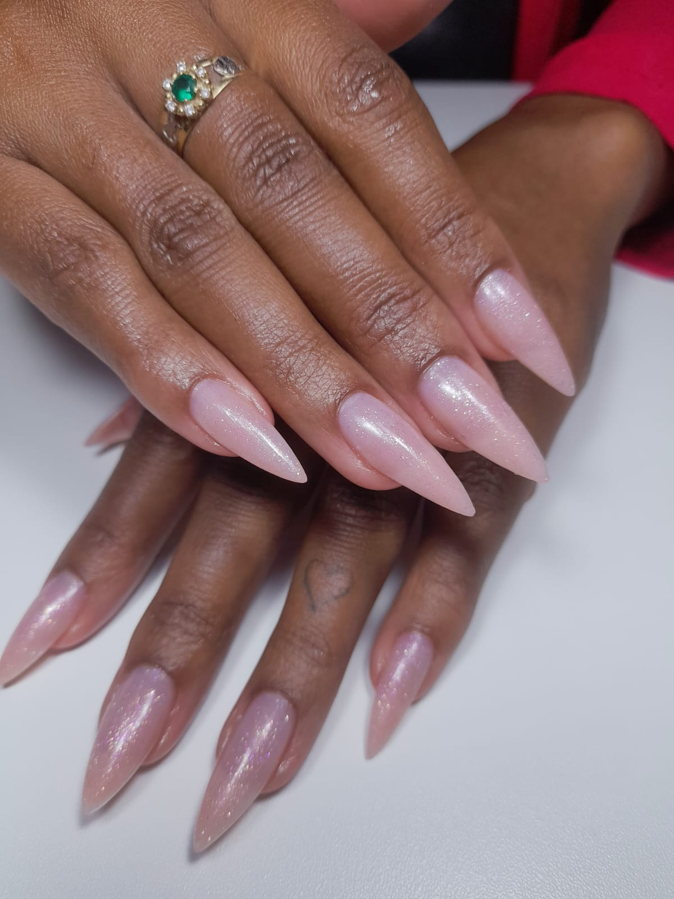
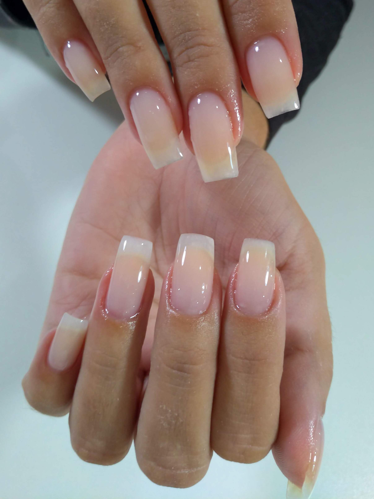
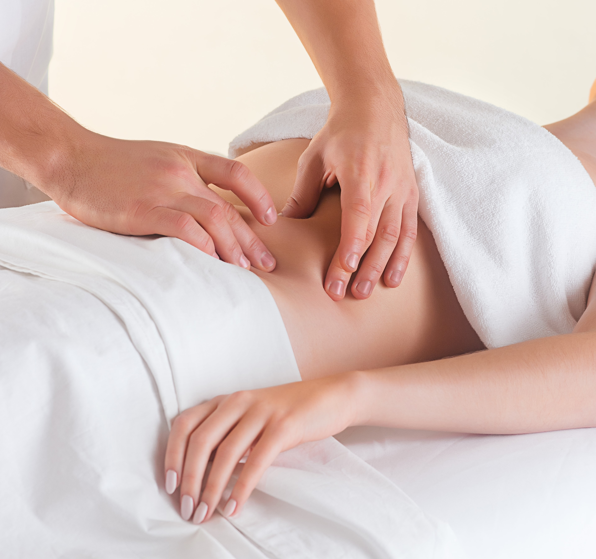
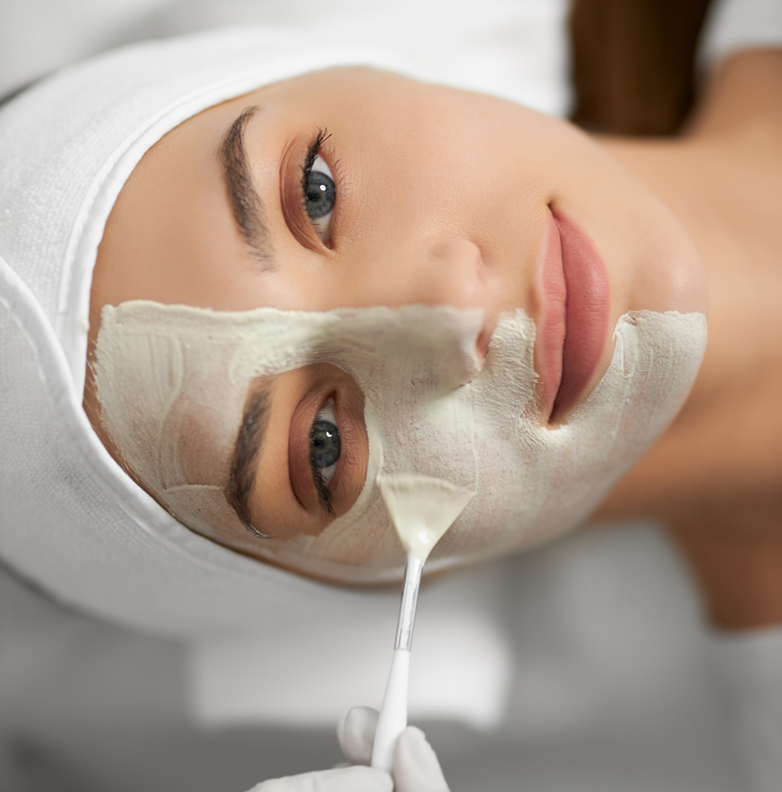

Serviços
Maquiagem É uma arte delicada que visa realçar a beleza facial, utilizando produtos específicos para isso. Os benefícios da maquiagem incluem a correção de imperfeições, o realce das características faciais, o aumento da confiança, a expressão da individualidade e a criação de diferentes estilos.
Agende um horário

Alongamento de Unha com Fibra de Vidro Realça a beleza das unhas de forma natural. A fibra é aplicada sobre a unha, proporcionando alongamento e fortalecimento. O resultado é uma aparência elegante e natural, sem comprometer a saúde da unha. A fibra de vidro é leve e flexível, proporcionando conforto e liberdade de movimento. O alongamento tem grande durabilidade, permitindo escolher o tamanho e formato desejado.
Agende um horário

Esmaltação em Gel É uma técnica que utiliza esmaltes em gel, que são curados sob uma lâmpada UV ou LED para garantir um acabamento durável e resistente a lascas por semanas. Os benefícios incluem uma maior durabilidade da cor, brilho intenso e secagem rápida, proporcionando um resultado impecável por mais tempo.
Agende um horário

Drenagem Linfática É uma massagem suave que estimula o sistema linfático para remover toxinas. Melhora o fluxo linfático, reduz o inchaço e a retenção de líquidos, alivia a sensação de pernas cansadas, melhora a circulação sanguínea, fortalece o sistema imunológico, auxilia na eliminação de toxinas, melhora a celulite e a aparência da pele, e promove relaxamento e bem-estar.
Agende um horário

Massagem Relaxante Promove o relaxamento físico e mental, alivia o estresse e a tensão. Melhora a circulação sanguínea e linfática, alivia a tensão muscular, reduz a ansiedade, melhora a qualidade do sono, e alivia dores crônicas.
Agende um horário

Limpeza de pele A limpeza de pele remove impurezas, desobstrui poros e revitaliza a pele, resultando em uma aparência mais saudável. Feita por profissionais, inclui vaporização, extração de cravos e aplicação de produtos específicos.
Agende um horário
